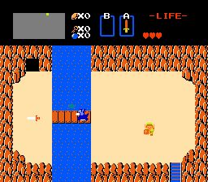
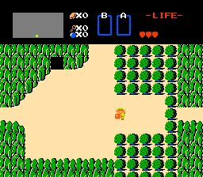

Zelda Improvement


Zelda Improvement |
|
An Overworld Editor for The Legend of Zelda |
|
Background
When I was young and gullible, I was more than willing to attempt all the fake methods my friends described to me for getting the raft to take off from the eastern coast of Hyrule. I loved The Legend of Zelda so much that I was constantly longing for new lands to explore. Only now, years later, do I actually have them. _demo_, a member of the Mario Improvement team, has joined forces with EFX to produce Zelda Improvement, a utility that lets users edit the overworld data for a Zelda ROM. Now any emulator user can journey through a virtually limitless number of amateur-designed worlds. At the time of this writing, ZI is only at version 0.1, and hence is still a little buggy. It may always be a little difficult to use, due to the awkward method Zelda uses to store the overworld map. Unlike many hacking utilities, though, ZI can atually be figured out with the help of the only semi-cryptic documentation. And with patience, even novice users can create worlds that rival Nintendo's original.
How it WorksAs anyone who's played Zelda knows, the overworld consists of a grid of individual screens, each 8 rows by 16 columns. In the Zelda ROM, each screen is stored as a set of 16 bytes. (Found in offset h15429-h15BB4, to be specific.) The value from 0-255 in each byte represents one of 256 different preset columns.  The hex value 0F, for example, represents a line of bushes at the top and bottom of the screen, with open ground in the center. 0E represents a solid line of bushes. So if you were to replace part of a screen's data with 0F-0F-0F-0F-0E, for example, you would have a small path lined by bushes, leading up to a dead end. There are similar preset columns for lakes, cliffs, cave entrances, even the waterfall. Zelda's entire overworld is constructed from these simplistic building blocks, and you can use these blocks to create your own worlds. With Zelda Improvement, though, you don't need to worry about hex offsets or what value represents a rock wall. The interface is entirely graphical. Users navigate a map of the overworld, find a screen they want to edit, click on a column, and then flip through all the possible replacements for that column onscreen. With a single keystroke, changes are saved directly to the ROM, ready for playing. It's still a tedious process in this early version, but ZI is a lot easier than using a hex editor.
Designers' TipsOf course, your level designs need to be compatible with Zelda's multitude of prgramming quirks. Here are a few tips to ensure players can actually beat the game you've designed:
User-Designed Worlds
Let's see what you can do! If you've done an edit for Zelda, E-mail me, and we'll make arrangements to get it posted here. Be warned, though, that all edits will be rated, and if it's not a quality job I can be brutal. Grin.
What You'll Need
|
|
|